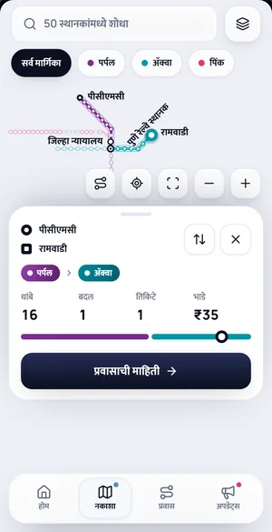

ॲक्वा लाईन: वनाझ – रामवाडी
ॲक्वा लाईन वनाझ ते रामवाडी धावते आणि महामेट्रो (महाराष्ट्र मेट्रो रेल कॉर्पोरेशन लि.) ती चालवते. 16 पैकी 16 स्थानके सुरू आहेत. भाडे ₹10 ते ₹35 (अधिकृत तक्ता).
स्थानके
- वनाझ Vanaz
- आनंद नगर Anand Nagar
- पौड फाटा Paud Phata
- एसएनडीटी कॉलेज S.N.D.T. College
- गरवारे महाविद्यालय Garware College
- डेक्कन जिमखाना Deccan Gymkhana
- छत्रपती संभाजी उद्यान Chhatrapati Sambhaji Udyan
- पुणे महानगरपालिका भवन PMC
- जिल्हा न्यायालय पुणे District Courtपर्पल लाईनपिंक लाईन
- आर.टी.ओ. पुणे R.T.O Pune
- पुणे रेल्वे स्थानक Pune Railway Station
- रुबी हॉल क्लिनिक Ruby Hall Clinic
- बंड गार्डन Bund Garden
- येरवडा Yerwada
- कल्याणी नगर Kalyani Nagar
- रामवाडी Ramwadi
नकाशावर
हलवण्यासाठी ओढा · झूमसाठी पिंच किंवा स्क्रोल करा
नकाशावरील स्थानक निवडा: त्याच्या मार्गिका, स्थिती आणि जवळची ठिकाणे पाहा, किंवा तिथून प्रवास आखा.
स्थानके त्यांच्या प्रत्यक्ष जागेवर आहेत (OpenStreetMap). राखाडी स्थानके अद्याप सुरू नाहीत; इंटरचेंज स्थानकांना गडद कडा आहे.
वेळा
| पहिली मेट्रो | 06:00 |
|---|---|
| सेवा वेळ | 06:00–23:00 |
| शेवटची मेट्रो | महामेट्रो प्रत्येक स्थानकावरून सुटणाऱ्या शेवटच्या मेट्रोची वेळ जाहीर करत नाही; सेवा 23:00 वाजता संपते. |
| किती वेळाने | गर्दीच्या वेळी (08:00-11:00, 16:00-20:00): दर 6 मिनिटांनी इतर वेळी: दर 10 मिनिटांनी पडताळलेले नाही |
इंटरचेंज
विस्तार
वनाझ – चांदणी चौक
ॲक्वा लाईनचा विस्तार. केंद्राची मंजुरी मिळाली, कार्यादेश दिले.
रामवाडी – वाघोली
ॲक्वा लाईनचा विस्तार, दुमजली उड्डाणपुलासह. केंद्राची मंजुरी मिळाली.
 पुणे मेट्रो मार्गदर्शक ॲप · Android आणि iPhone साठी मोफत
पुणे मेट्रो मार्गदर्शक ॲप · Android आणि iPhone साठी मोफत
प्रत्येक मार्गिका आणि स्थानक फोनवर.
कोणती स्थानके सुरू आहेत, दोन्ही दिशांचा पुढचा थांबा आणि शेवटची मेट्रो, झूम करता येणाऱ्या नकाशासह.
- मेट्रो नकाशा
- शेवटच्या मेट्रोची आठवण
- इंटरनेटशिवाय चालते

ॲपमध्ये काय आहे · या वेबसाइटप्रमाणेच अनधिकृत.

स्रोत
- Maha Metro timetable notice: regular service 06:00 to 23:00 (Aug 2025) अधिकृत
- Pune Metro frequency: every 6 minutes at peak, about 10 off-peak (Sept 2026 report) दुय्यम
- Pune Metro Rail Project (Maha Metro) - home page and journey planner अधिकृत
- Maha Metro official fare chart (Purple and Aqua lines) अधिकृत
- OpenStreetMap: Pune Metro station locations (© OpenStreetMap contributors, ODbL) दुय्यम

माहिती 8 नोव्हेंबर 2026 रोजी तपासली.